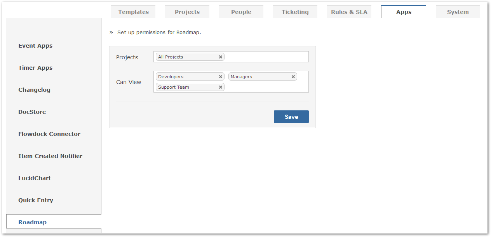

The Roadmap app displays the future of your project, or Sprint/Version, that is currently being planned for release. Roadmap helps you understand when, and how far, a release is from being deployed. A percentage metric helps you to understand quickly how much progress is left for completion.
The selection of various Sprints/Versions helps you to drill down directly into all assets of your project progress.
To also ensure that a project or version is being maintained and progressively worked on, the Roadmap app displays time information to better gauge how much time has been applied, and is left, towards a project or version release.
Note: in order for a Sprint/Version to appear in the Roadmap, it must not be archived, and not released.With Gemini 6.1, configuring permissions for individual apps, and access to specific projects and user groups, has never been easier.
Simply navigate to the Apps section of your Gemini system, located at Customize > Apps. From here, select the Roadmap app. You will then be able to configure the pertinent projects and user groups that require Roadmap access.